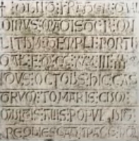

Gualdim Pais
(Braga 1118 - Tomar 1195)
D. Gualdim Pais (Gaudinus, Galdinus o Gualdinus en latín), Gran Maestre de la Orden del Temple en Portugal, de 1157 a 1195, fue el fundador del castillo de Tomar.
Su vida
Hijo de Paio Ramires y de Gontrode Soares, nació en la región del Miño, al norte de Braga, en 1118.
Fue criado en el monasterio Santa Cruz de Coimbra y se le ve muy pronto al servicio del futuro rey, Alfonso Henriques, a quien asiste con sus hermanos de armas, los caballeros Mem Remires y Martin Monis, en todas las batallas que hay que librar contra los Moros por la conquista del reino. Se hace ilustre en la toma de Santarém en 1147, y luego en la de Lisboa, en 1149, antes de embarcarse hacia Palestina donde participa en el Sitio de Gaza en 1153.
Su traza y su prestancia de guerrero y de jefe realzan aún más el prestigio que le dan sus notables cualidades como combatiente y organizador. La estancia en Oriente viene a perfeccionar una experiencia militar ya confirmada y cuando vuelve de las Cruzadas, sabe cuál es la misión que le espera. En 1157, es nombrado cuarto Gran Maestre de la Orden del Temple en Portugal, entonces con base en Braga.

La visión de San Bernardo de Claraval
Unos años antes, mientras que Alfonso Henriques se preparaba para librar la famosa batalla de Santarém, San Bernardo hace saber a Gualdim Pais que en sueños, ha visto a la Santísima Virgen revelarle la victoria del Rey.
El Rey hace en seguida voto de ofrecer a Claraval las tierras y los subsidios necesarios para la construcción de una vasta abadía si se lleva esta victoria decisiva. Satisfecho, el Rey mantiene su promesa y San Bernardo se presenta en persona en Alcobaça, acompañado de cinco monjes-arquitectos encargados de delimitar los terrenos necesarios para los cimientos en los que el propio soberano pone la primera piedra.
Pero la construcción de un monasterio en terreno avanzado necesita una seria protección militar y el Rey confía ésta a los Templarios que poseen ya algunos castillos en la región. La Orden del Temple recibe del Rey la donación de todas la tierras situadas entre Santarém y Tomar. Gualdim Pais es el encargado de elaborar el cinturón defensivo que rodea los bienes de Claraval al mismo tiempo que refuerza la protección de las líneas portuguesas de cara a las incursiones árabes.
En 1160, Gualdim Pais comandita la construcción del Convento de Cristo y del Castillo de Tomar, que se convierte en el Cuartel General de los Templarios en Portugal; él se instala allí en 1162. También ha participado en la iniciativa de la construcción de los castillos de Almourol, de Idanha, de Ceres, de Castelo Branco, de Monsanto y de Pombal. Él se instala en Pombal en 1174.
En 1190, Tomar es asediada por los Almorávides bajo el mando del Rey de Marruecos, Yusuf I, pero Gualdim Pais consigue defender el Castillo contra fuerzas muy superiores, impidiendo así la invasión del norte del Reino por esta parte.
Muere en Tomar en 1195 (1233 de la era de España). Sus restos descansan en la iglesia de Santa Maria do Olival, en Tomar, donde una estela mural recubre un nicho que contiene las cenizas del caballero.
 |
 |
 |
Por sus cualidades personales de bravura, por su acción incansable, por sus logros, Gualdim Pais representa el tipo ideal de Templario cuyo recuerdo permanece vivo en tierras portuguesas. También es, al parecer, el del iniciado perfecto, capaz de trabajar con presciencia en el futuro de su país y sus sucesores no tendrán más que completar la obra que él comenzó.

Implantación de la Orden del Temple en Portugal
A penas dos meses después de la comparecencia del fundador de la orden del Temple ante el concilio de Troyes -cuyo papel sería capital en el reconocimiento y el desarrollo de la orden-, uno de sus compañeros recibe una primera donación importante en Portugal. El 19 de marzo de 1128, la reina Teresa, viuda del conde Enrique y tutora del hijo de ambos Alfonso, concede al Temple el castillo de Soura y sus dependencias. Otras donaciones llegan rápidamente. No son necesariamente hechos de poderosos señores pero su número es importante. De esta manera, entre 1128 y 1130, el Temple recibe, en su totalidad o en parte, 19 bienes territoriales, de los cuales varios son dominios rurales.. En junio de 1145, Sancia, hija de la reina Teresa, y su marido, donan al Temple el castillo de Longrovia, en la Extremadura portuguesa, así como numerosas dependencias en la región de la metrópoli Braga. En esta misma ciudad, el arzobispo Juan concede a la orden, el mismo año, una casa, un hospital para los peregrinos y la mitad de las rentas eclesiásticas de la ciudad, incluido el diezmo. Paralelamente, los templarios practican una política activa de compras, que se conjuga con la piedad de los fieles cuyos legados testamentarios son regulares e importantes.
A partir de 1143, presencia permanente de los Templarios en Portugal.
Los primeros signos tangibles de una presencia permanente de la orden del Temple en el reino aparecen a partir de 1143, año en el que un templario francés, Hugues de Martone, es calificado de procurador del Temple en Portugal. El año siguiente, la pequeña guarnición templaria del castillo de Soura es derrotada en un enfrentamiento con las tropas moras de Santarém. En 1147, los templarios se toman la revancha participando en la toma de esta ciudad y la Orden obtiene del rey, como premio por sus esfuerzos, la facultad de recibir todos los derechos cobrados en Santarém a título religioso.
A fines de los años 1150, bajo el magisterio de Gualdim Pais, el cuarto Gran Maestre portugués del Temple en el reino, comienza el extraordinario crecimiento de la Orden. Durante esta década, el Temple recibe del rey un importante dominio agrícola en la confluencia del Nabao y el Zezere y comienza la construcción del castillo de Tomar, llamado a convertirse en la sede del Temple en Portugal, y luego de su sucesora, la Orden de Cristo. Unos diez años más tarde, en el marco de una vasta dotación de tierras al sur del Tajo pero que se quedará en papel mojado, el rey insiste para que los recursos de la Orden no sean utilizados más que en el reino, y en especial para perseguir la reconquista.